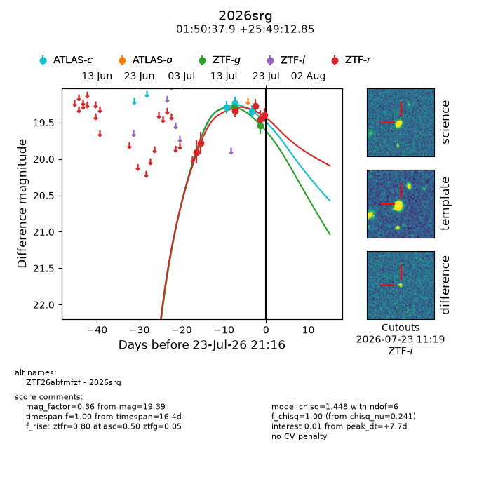
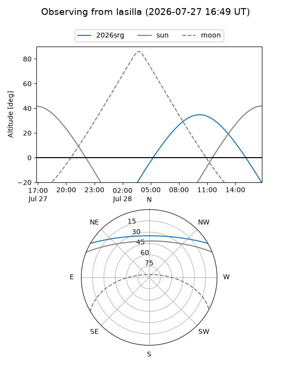
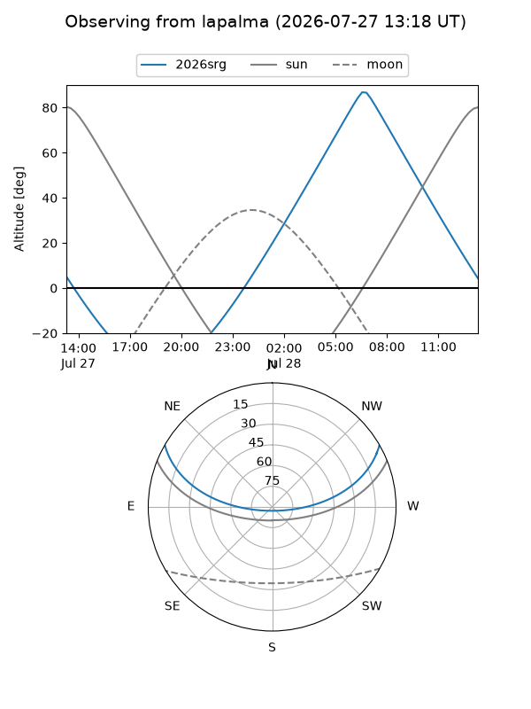
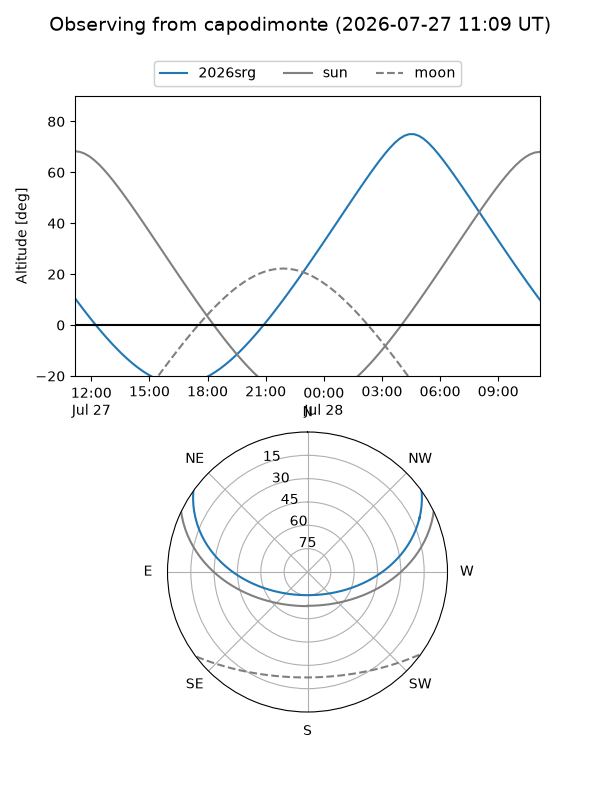
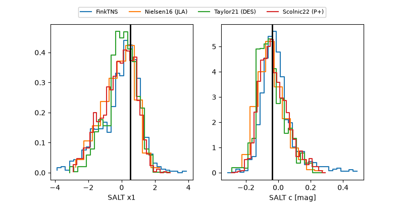

2026srg
Target 2026srg at 2026-07-23 21:19
Aliases and brokers:
FINK-ZTF: ztf.fink-portal.org/ZTF26abfmfzf
Lasair-ZTF: lasair-ztf.lsst.ac.uk/objects/ZTF26abfmfzf
ALeRCE-ZTF: alerce.online/object/ZTF26abfmfzf
YSE-PZ: ziggy.ucolick.org/yse/transient_detail/2026srg
TNS name: wis-tns.org/object/2026srg
Direct TNS query: direct search
alt names
ZTF26abfmfzf (ztf,fink_ztf)
2026srg (tns,yse)
Coordinates:
equatorial (ra, dec) = 27.6579,+25.82024
equatorial (HMS+DMS) = 01:50:37.90,+25:49:12.85
galactic (l, b) = (139.2670,-35.16685)
Flags:
TNS type: nan
peak dt: +7.7
Photometry:
last atlasc=19.35, ztfg=19.54, ztfr=19.39
3 atlasc, 2 ztfg, 6 ztfr detections
Lightcurve

Visibility



Additional plots
